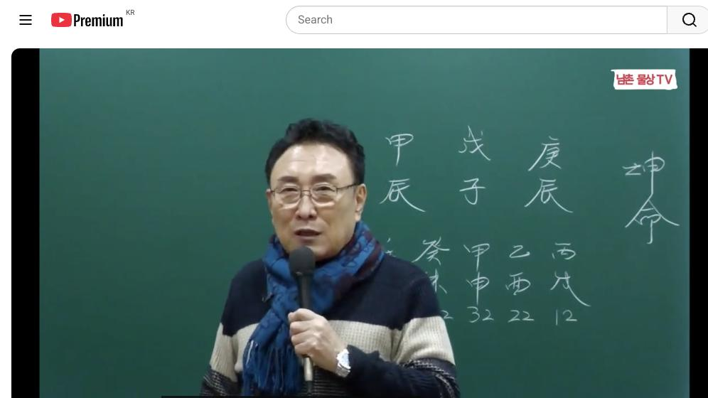
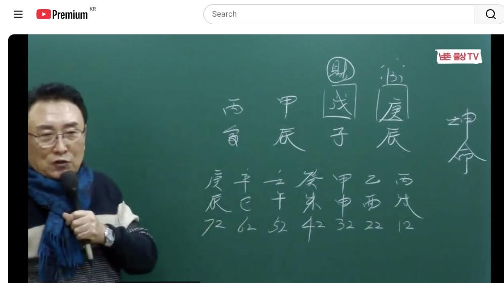
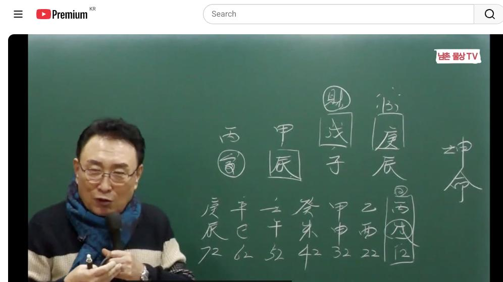
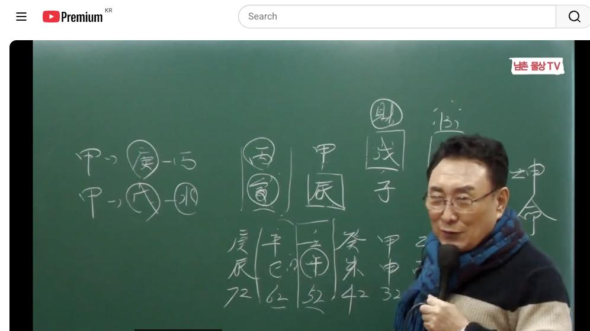

남촌물상TV 전체 문서 › 동영상 V0034
[실전사례]12 내 새끼 소원 빌어 손주가 꿀꺽한 사주 상담문의 : 010-3139-6645

| 문서 번호 | V0034 (동영상) |
|---|---|
| 영상 URL | https://www.youtube.com/watch?v=wsRwcA2kefY |
| 영상 ID | wsRwcA2kefY |
| 게시일 | 2023-12-25 |
| 길이 | 28:49 (1729초) |
| 조회수 | 1,376회 (수집 시점 기준) |
| 카테고리 | Howto & Style |
| 자막 | ko (자동생성) |
| 수집 시각 | 2026-08-30 17:03 (KST) |
영상 설명 (YouTube 설명 원문 그대로)
내 새끼 재산 손주가 꿀꺽한 사주 #실전사례 #자식 #손주
전체 자막 (598구간 · 타임스탬프 클릭 시 해당 장면으로 이동)
[0:01][음악]
[0:07]이제 지난 시간도 이제 우리가 그
[0:11]학교에서 종강을 하고 오늘 이제
[0:13]여기서는 그 창업은 1월 4일 날
[0:16]다시 이제 새롭게 개강을 하죠 그 주
[0:19]분들도 많이 소개도 하시고 참여시기
[0:24]바랍니다 자 이제 지난번에 밴드에
[0:26]올린 사주를 여러분들이
[0:29]보셨는데 사주를 올렸냐 그러면
[0:31]여러분들이이 천관 보은 사주가 굉장히
[0:34]좋게 보이잖아요 자 경진 무자 갑진
[0:38]병인 그럼 천간에 각 경모가 다
[0:41]있잖아요 그 굉장히 좋은 사주죠 이게
[0:44]사주가 근데 우리가 생각할 때는
[0:46]굉장히 좋다고 이제 그 그 고주를
[0:48]배웠는데 실질 상으로 보시면 그렇게
[0:51]좋은 건 아니에요 내막이 중요한
[0:53]것이지 겉으로 볼 때는 사주가 굉장히
[0:55]좋다고 생각이 들지만 사실상 보면
[0:58]좋지 않는
[0:59]거거든요 자 그 이후부터 이제 설명도
[1:01]하고 여러가지 할 건데 제가 이제
[1:04]우리 제제 관법을 만들 때
[1:07]여러분들이이 어떻게 그 제제 관법
[1:10]생각하셨고 물어볼 수도 있어요 그럼
[1:11]자 우리들이 보통 보면은
[1:16]고전에서는 뭐라 합니까 식신 생계를
[1:19]쓰죠 그죠 자 식신 생계를 쓴단
[1:22]말이에요 그럼 식신 생계는
[1:25]것이 만약에 우리 못
[1:28]같으면 자 국수를 재로 간 거고 자
[1:33]뭐 식신은 뭐예요
[1:35]목생화네 화생토 그죠 자 그럼 토가
[1:40]목에 재가 된다는 얘기고 이것을
[1:42]우리는 그냥 제로 제제 간으로
[1:45]들어간다는 얘기에요 그럼 무슨
[1:47]얘기냐면 쉽게 얘기해
[1:50]자 식신 목생화 화생토 그럼 이게
[1:54]이제 그 주 식신 제를 우리가
[1:57]강의했는데 그러면은
[1:59]고전에서는 식신 생계에 대한이 재가
[2:02]재를 어떻게 쓸 것인가를 연구할 거고
[2:07]우리 입장에서
[2:08]그냥 화까지 쓰지
[2:11]않아요이 토에서 땅에서는 뭘 심어야
[2:14]돼 나무 심어야죠 그죠 자 나무를
[2:19]심으면 식신 생계 중에서도 우리는
[2:22]뭐야 물이 필요하는데 여기는 식신 목
[2:25]목 어 목생화 하생 토로 갔단
[2:28]말이에요 토생 금생수 기 까지 거쳐야
[2:30]돼요 근데 우리 제가 생각했던 것은
[2:34]제제 법으로 보면은 자
[2:38]갑목에
[2:40]갑목의 재는 뭐예요 토죠 토 또 토의
[2:45]재는 자 무단 말이에요 자 자수대 자
[2:49]이렇게 볼 수 있어요 그러면은
[2:52]고전에서는 뭐가 붙냐 면은
[2:58]목생화 목
[3:02]화생토 토생금 이렇게 된단 말이에요
[3:04]그렇죠 그러면이 토가 여기서 거쳐서
[3:07]이만큼 거쳐 나와야 돼요 한 간디
[3:10]건너뛰고 계산한게 우리 제재
[3:14]간법이에요 그러니까 제가 연구할 때이
[3:16]제제 관법을 만들 때는 어떻게
[3:18]만들었느냐 이렇게 해서 만든
[3:21]거였어요 그럼 저 어 어떻게 제제
[3:24]관법을 만들었습니까 얘기하지 않아요이
[3:26]관법을
[3:27]사용했었는데 처음에 우리는 자
[3:30]여기서는 지금 그 식신 생지는 걸
[3:33]목생화 화생토 금생 수 수까지 간단
[3:35]말이에요 여기까지 자 그러 우리는 뭘
[3:38]생략이 했냐 화가 생략이 되고 또
[3:41]뭐가 해요 금생 금이 생략이 됐잖아요
[3:44]건너 뛰어서 그냥 갓 나라 식신
[3:46]생계를 따져서 그냥 제재 관법을 갔다
[3:49]그 말이에요 그러면 자 목극토 토국
[3:53]수예요 그럼 우리는 이제 제제
[3:55]간단하게 해서이 토에서이 땅에서이
[3:59]땅에서 뭐 할 건데 나무 심어야
[4:01]되잖아요 그죠 자 나무 심으면 뭐예
[4:05]물이 물을 줘야 클 거
[4:08]아니에요이 관법이 소위 제제 관법
[4:12]근데 우리는 그 고전에서 맨날 식신
[4:16]생제 그러면 여기이 여기까지 단
[4:19]단계가 목생화 화생토 토생 그 금색
[4:22]수까지 가서 답이 나오는 거예요
[4:24]그래서 저는 물에서는 한개다 위에다
[4:28]여기까지 안 가고 여기서 바로
[4:30]해결되는 것이 무상 문이에요 그럼 자
[4:32]한 가지 더
[4:34]볼까요이 땅에서 나무와 갑목이 살기
[4:38]위해서는 물이 필요했다 그럼 행위가
[4:41]사주 구성해서 물이 있는가 없는가
[4:43]찾아보면 되는
[4:45]거예요 그러면 자 그다음에 그다음에이
[4:48]물에서 물이라는
[4:50]거서 만드는 거 있어야 될 거
[4:52]아니에요 물을 물은 생산된 물이
[4:55]있을까요 그러면 자 자 우리가 보면
[4:58]목극토 토극수 수 화예요 그다음에
[5:01]우리는 뭐냐 자 나무에 꽃히는 역할
[5:04]나중에 들어가요 그러면 자 여기에서는
[5:07]한달에 거친 거 우리는 바로 들어간다
[5:10]말이에요 우리 제제 법이 제제 법이
[5:14]나무에서 나이 나무란 목이란 나무가이
[5:18]토 네가 먹고 사는 길은 뭘 할 건데
[5:21]나무를 키워서 꽃혀 주면 된다는
[5:24]식이란 말이에요 근데 이거는 뭐예요
[5:26]목생화 화생토 토생금 금생수 이게
[5:30]식신예요 이것을 한 번 건너뛰게 만든
[5:34]것이 제재 법을 제가 만든
[5:37]겁니다 여러분들은 제가 제제 한법 뭐
[5:40]관역 법을 쓰면 여러분들은 그냥 저
[5:42]사람이 맞는 거지 하지만 저는이
[5:45]원리를 가지고 다 제제 법을 만들었던
[5:47]거예요 그데 다른 사람 생각할 때는
[5:49]아하 당신이 제가 쓰는 법이 그것이지
[5:52]뭐 뭐고 있어 이렇게 하지만 제가
[5:55]만드는 간법 중에서는 여기 이런이
[5:58]관계성이 확실 자료가 확실히해야
[6:00]돼요이 관법 제가 제재 관법을 만는
[6:04]것이니까 여러분은 최대로 활용에
[6:06]쓰시면 돼 아셨죠 자 그 궁금증을
[6:10]자꾸 풀어 줍니다 그래서 왜 어떻게
[6:13]해서 제제 관복을 만들었느냐 하는
[6:15]것도 이제 제가 설명을
[6:19]드렸어요 자 그럼이 4주의 장단점을
[6:22]한번 볼까요이 4주에 자 경진 무자
[6:25]갑진 병인데이 사주가 그러면 제가
[6:28]어디 있습니까 재 부모 자리에 자
[6:31]부모 자리에 재가 있어요 여기 부모
[6:34]자리에 부모 자리에 재물이
[6:37]있다 자 그다음에 관은 어디 있어요
[6:42]그 국과 자리 자 국과 자리 좋다
[6:44]국과 자리
[6:47]있다이 관이에요
[6:50]재관이 이제에 제일
[6:53]중요하죠음 그러면 자 쉽게 해서 네가
[6:56]먹고 사는 방법이 관으로 갈 것이냐
[6:58]재로 갈 거예요
[7:00]그죠 자 그러면이 갑목이 나무를
[7:05]심어라 나무 심은 물이 필요할 가지요
[7:08]그럼 우리 제 토수 자 토극수 목극토
[7:12]토극수아요 그럼 수색 목이 되는 거
[7:14]아닙니까 나무를 키워라 그다음에
[7:17]꽃피어라 그죠 자 그러면 사주가
[7:20]굉장히 좋은 사주가 되는 거예요
[7:22]굉장히 우리가 이게 제 소위에 이런
[7:25]사주 하면 천가에 갑 경모가 있으니까
[7:27]최고 좋은 사주로 고전에 다 좋다
[7:29]그럽니다
[7:31]실상은 그렇지 않아 왜 그러냐
[7:35]그러면이 사주의 제일 단점이 이거예요
[7:38]이거 이거 신
[7:41]진토에 자기가 갑 인으로 뿌리를 갖고
[7:45]있으면이 사람 대박난
[7:46]사주에 근데이 자리에는 누가 차지하고
[7:51]있냐
[7:52]그러면이 관이 남자 이게 여자 사니까
[7:56]남자 뿌리가 여기 존재하고 있어요
[7:59]근데 자기가 갑인이 됐을 켰다면
[8:03]얼마든 좋은 사주가 되는데이 진투
[8:06]하나 때문에이 사주가 배린 사주가
[8:08]되는
[8:09]거예요 그러니까 고전에 여러분들이
[8:12]착각하시면 안 된다니 설명 드리려고이
[8:13]사주를 이번에 갖다 낸 이유가
[8:15]그거예요 천간에 보니까 얼마나 각
[8:18]경무 병까지 있 얼마나 좋아요 최고
[8:20]금상 처하지 그러면 고절한 사람 이거
[8:23]다 좋다 그래 다이 사주 대박난
[8:26]사주네 벼슬도 하고 돈도 먹고 다
[8:28]좋다고 그러잖아요
[8:31]아니다 이것을 우리는 그이 사람
[8:35]실세가 또 저 그 해 보면 그렇고요이
[8:38]사람이 잘됐어 잘되고 있잖아요 잘 안
[8:41]그든 그럼 고전을 하는거 잘 됐어야
[8:44]돼이 사람이 안 되고
[8:46]있어요 자 이것이 이제 우리가
[8:49]고전하고 물상론고 차이점이 현실적인
[8:52]걸 비유한 거예요 그래서 이것을
[8:54]여러분들이 잘 알아야
[8:57]돼음 자 그러면은
[9:00]본인이 저 무토의 뿌리를 내린다는
[9:02]것은 내 부모의
[9:05]영역이죠 이쪽은 부모의 영역이니까
[9:08]부모 부모의
[9:10]재물은지가 갖고 싶은 생각하고 있는
[9:13]거야 근데 자기 뿌리가 잘돼야 되는데
[9:16]자식 자리에 내 뿌리를 갖고 있어요
[9:20]그럼 이런 사주대 보면은
[9:24]자기는 고생 많이 하면서도 부모
[9:28]갔다가 시간때 꽂혀진 사주고 이렇게
[9:32]사주가 되는 거예요 그러니까이 사람의
[9:35]하은 저우리 저어 대부분이 이제 우리
[9:38]저 어이 선생이나 다른 분들 치 풀려
[9:42]놓고 보면은 공부를 잘한 걸로 돼
[9:44]있단
[9:45]말이에요 공부를 잘한
[9:47]걸로 공부 잘 못 해이 사람들은 운이
[9:50]안 맞아 그 그것을 사주 여러분들이
[9:54]눈으로 들어와야
[9:57]돼요 자 그러니까 이제 이런 걸
[10:00]가지고 사주 풀 때이 사람 사주가
[10:02]어떻게 살아갈 것인가를 이제 운에
[10:04]따라서 설명도 하고 어떻게 관계성
[10:07]있느냐 상담할 건 아니에요 여러분
[10:08]상담할 때 그렇게 하시잖아요 그럼
[10:10]사주가 보면 이제 아 사주가 좋네요
[10:12]제목도 좋고 아주 자 제가 여기도
[10:15]있고 여기도 있고 여기도 있고 제가
[10:17]좋네요 이렇게 할 수 있잖아요 근데
[10:20]안 좋은데 쩔 거예요 안 좋은데 근데
[10:22]우리 고전에서는 자이 천간에 이렇게
[10:25]좋은 글씨가 각 경모가 다 있고
[10:27]태양까지 있으니 아주 좋은 상마
[10:30]사주라 이렇게
[10:32]보시죠 지금부터 안 좋은 것을 설명해
[10:35]드리겠습니다
[10:38]자 지금 여러분들이이 대운을 보시면
[10:41]이제 병술 대운 와 있죠 병술대운
[10:44]자이 병술 대운에서
[10:50]보면 자이 그 대운 볼 때 여러분 잘
[10:53]보셔야 돼요 대원이 굉장히 중요합니다
[10:56]자 10년 동안에 일어날 일을 예한
[10:59]때문에 중요하다는 거지 대운이 뭐
[11:01]갖고 사주를 본 건 아니에요 10년
[11:04]동안에 일어날 일을 예측해 준거다
[11:06]그럼 10년 안에 어떤 것이 걸릴
[11:08]것인가 이걸 보통 설명한다 그
[11:10]말이에요 그러니까 병화가 있다 아하
[11:14]자 병화가 있으면 태양이 두 개 뜨는
[11:16]거죠 그렇잖아요 여기 또 하나
[11:18]생겼잖아요
[11:20]어둡지 어두워요 그러 자 갑목이
[11:24]태양이 비쳐야 나무가 발색하는 것이지
[11:27]어두운데 무슨 뭐가 되겠어요 안 다
[11:29]그 우리 물상에는 병 병이 태양이 두
[11:33]개월 때 어두운 걸로 돼 있고 또
[11:35]글씨 글자 자체가 밑에가 뭐예요
[11:38]토죠 술토가 진술충
[11:40]하잖아요 제가 우리 물상 제일 크게
[11:43]본게 뭐라 그랬어요 술
[11:46]진술충 다른 거는 별거 아니에요
[11:49]진술충 미는 땅이 움직일 정도
[11:51]부동산이 움직일 수 있는 것이고 근데
[11:54]이제 진토와 술토가 격이 되면 이건
[11:57]충이 굉장히 크 용암이 폭발한다 크게
[11:59]폭발한다 이런 개념으로 이해하시면
[12:01]된다고 항식 있잖아요
[12:04]그러니까 자기 자신이
[12:07]어두운데다가 진술 충으로 폭파하면
[12:11]물이 착수될 거 아니에요 그 물이
[12:13]착수된다 자 물만 진술 충이 폭파되면
[12:15]위에도 위에도 허발 돼요 안 돼요
[12:18]천간지지 그럼 본인이이 땅 나무도
[12:21]움직이기 때문에 정착도 안 되고
[12:23]공부도 안 한다 얘기예요
[12:26]금중 결과이 사람 공부 안 해요
[12:29]공부를 안 해 자 그럼 뭐 뭐 겠느냐
[12:33]보통 보면 돈 쓰기는 좋죠 돈 쓰기
[12:35]왜 좋냐 대충
[12:38]보면은 운이 우리가 이제에 총운을
[12:41]봤을 때 이제 한번 볼까요 총운을
[12:43]봤을 때 자 병수 대운 한번 집어
[12:45]볼게요 자 요쪽 분은요 테레비를
[12:51]보시고 자 병술 대원을 보면은
[12:55]보면은 자 17살 때가 병신이죠 네
[13:00]이거 이제 여러분 상담하실때 이거 잘
[13:01]하셔야 돼 자 17살 때가 지금
[13:04]병신이란 말이에요 년이에요 자
[13:07]병병 아까 대운에서 예측해 준
[13:10]거죠 태양이 와서 어두워졌다 그러면
[13:14]자 지지에는 신이이 사람한테 사주가
[13:18]뭐예요 관 관이 아니에요 관
[13:23]남자지 자 이해 가지시오 저 서희 자
[13:26]그러면 고등학교 1학년 때
[13:30]어둡다는 얘기는 어두움을 행동하고
[13:32]있다는 얘기지
[13:34]뭘로 남자 신자진 수 돈 쓰면서 돈
[13:40]쓰면서 수지하는 거예요 자 그러니까
[13:43]거학 1학년 때부터 공부를 잘해 안
[13:45]해 안
[13:47]하지 이렇게 보시면 돼요 그러니까
[13:50]여러분들이 공부하실 때이 사람이
[13:53]공부를 잘했 겠냐 못 했겠냐 볼 때는
[13:54]운을 보는데 이런 걸 보시면 되지
[13:57]이렇게 딱 보시면 답이 나오죠
[13:59]잖아요음 그니까 공부를 할 수가 없는
[14:03]거죠 그러니까 다른 사람들이 생각할
[14:06]때는 다다 좋고 다 좋다 하는데
[14:09]여기서부터 핀트가 터지는
[14:12]거예요 그러니까 이때 이때이 대운이란
[14:15]것은 대운이란 것은 여기에 10년
[14:19]동안에 그 영향이 어디에 미치는가를
[14:23]보라 그랬잖아요 이것이 대운 위지 그
[14:26]대운 가고 사지 본 거 아니에요
[14:28]그니까 그니까 10년 동안에 운이 안
[14:31]좋다 한 얘기는 보통 7년 이상이 안
[14:34]좋은 거예요 운이 좋다 할 때는 7년
[14:37]이상 좋은 거고 운이 안 좋을 때는
[14:39]7 8년이 안 좋은 겁니다 그렇게
[14:42]보시면 되는 거예요 그래서 뭐 10년
[14:45]운이 안 좋아요 그러면 계속 10년
[14:47]내내 안 좋은게 아니라 보통 7년에서
[14:50]8년이나 6 7년이 안 좋습니다 운이
[14:53]대분이 보면 그렇게 돼 있어요
[14:55]그러니까 이때 운이 안 좋겠네 하는
[14:58]것이지 그러니까 경술 대운이이 왔다는
[15:02]얘기는 10년 동안 운이 네가 좋은
[15:04]운 아니야 이거 아니에요 그럼 학생
[15:07]때는 뭐예요 공부를 잘해야 되잖아요
[15:09]그러니까 하 진토는 것이 제가 그
[15:13]재물이 그러면 신이 왔다는 얘기는
[15:16]자기의이 경구에 뿌리가 온 거예요
[15:19]관이 온 거예요 남자하고 잘 놀면 돈
[15:22]잘 썼다 얘기예요
[15:24]결론은 남학생들 잘 놀면서 진토
[15:30]진터 제 엄마 부모 돈의 뿌리란
[15:32]말이에요 부모돈 갖다 잘 쓰고 잘
[15:34]놀고 공부를 안 했네 그 말고 같은
[15:36]얘기예요
[15:37]아 그러니까 그 이제 공부를 잘했냐
[15:40]못했냐 하는 것도 이렇게 파악하는
[15:42]겁니다 검증 결과 공부 안 하고
[15:46]놀아요 또 남자 때문에 속 썩
[15:48]object
[15:50]썩였다 당연하 거예요 그래서
[15:53]여러분들이에 우리 물상 도는 제가
[15:55]항식 얘기지만 검증된 것만 가지고
[15:58]사주를 풀지 검증돼 안는 거 공개를
[16:00]안 해요 누구 너무 베긴 것도 없고
[16:04]나무 거 저 얻어다 쓴 것도 없고 다
[16:07]그렇습니다 근데 이런 사주의 특성을
[16:09]여러분들이 잘 이해하시면 이렇게 건만
[16:13]좋다고 해서 사주가 좋다고 단정을
[16:15]짓지 마라 그 말이에요 고전에서는
[16:17]무조건 얼마나 좋습니까 천간에 각
[16:20]경모가 다 병가 있으니 기간
[16:22]존사 우리 저 박사님 그래 최고죠
[16:27]최고 좋은 거 아니에요 경 최고 좋죠
[16:29]감경 다 좋게 내가 뭘
[16:32]좋아 그러니까 그 운과 본인의 사주
[16:36]흐름을 보시 말해 그러면 이제이
[16:39]진토는 것이 진토는 것이 아까
[16:42]그랬잖아요 여기에 경금의 여기서부터
[16:44]신자 여기도 신자
[16:47]진이에요 그러니까 관으로 인해서 결국
[16:50]탁수가 되는 사주가 많지 그 여러분들
[16:53]이제 그것을 이해하시면 된다 그
[16:55]말이에요 그래서 그 배우실 때 공부할
[16:58]때는 아이고 이게 엄청 좋은 사주에
[17:01]하고 배웠는데 어 제가 이제 고전하고
[17:04]차이점이라 거 제가 제제 간범이라 쓴
[17:06]이유도 우리 물상론 벌 3개다 위로
[17:10]하고 있잖아요 제가 간 제 간의 관법
[17:13]제 관법 만들
[17:14]때도 식신 생제 아니라 제 죄로 가서
[17:19]어떻게 할 건데 그냥 답을 찾는
[17:21]거예요 그러니 무토 1주가 제가
[17:24]뭐예요
[17:26]물이죠 자 그러면 물저 저 어 물
[17:29]다음에 뭐예요 화죠 그러면 자 모토
[17:35]일주가이 물이 뭐 할 건데 그 말
[17:37]아니에요 나무 심어야 물 줄 거
[17:40]아니에요 그 관이 필요하다 자
[17:42]그다음에 막 관이 있는 거 보면 사주
[17:44]구속 보면 알겠지 그러면 자 물을
[17:47]만들 수 있는 금도 있다 금이 물에서
[17:49]놀지 해요 그럼 제사 금도 있잖아요음
[17:52]근데 뭐가 없어 화가
[17:55]없잖아가 다 좋은데 꽃을 높이고 앉아
[17:57]있네 그러니까 제 꼽히기 위해서 계속
[18:00]가고 있네 이제 이렇게 사주가 읊어
[18:02]져야 돼 그것을 여러분들이 제제 관법
[18:06]간의 관법을 제가 만들어 낸 거예요
[18:09]그래 쉬우라고 여러분들의 공식을 쉽게
[18:12]쓰라고 제가 만들어 낸거다 그
[18:15]말이에요 근데 고전에서는 식신
[18:18]생장하고 관인 상생을 하잖아요 다 한
[18:21]가디 다 다섯 개까지 나와야 돼요
[18:23]우리 물상론 네가 관이면 뭐 할 건데
[18:26]재면 뭐 할 건데 그냥 답이
[18:27]나오잖아요 이게 물상론이에요
[18:30]그래서 고정보다는 한 개다 위에
[18:33]있는게 물상론이에요 여러분도 인식하지
[18:35]않아요 또 어떤 직업을 택하느냐
[18:37]정확히 할 수가
[18:40]있다 그러면 이런 사람들이 직업을 뭐
[18:43]하면 좋을까요 한번 해 볼까요 크게
[18:45]간단하게 생각하 봐요 자 인묘진 해야
[18:51]인묘진 해야 인묘진 하면
[18:53]좋죠 추은데 이렇게 공부를 안 하고
[18:57]남자들하고 그냥 학생들 때 공부하고
[19:00]어 돈이나 쓰고 다기 입묘지 되겠어
[19:03]안 되는
[19:04]거지 안 맞다 거야 수가 없지 저 안
[19:07]맞아 할 수가 없는 거예요 자
[19:09]그리고 목에 을목의 뿌리가
[19:13]없잖아요 을목의 뿌리가 존재해야 묘이
[19:16]되는 거지 천간에을 뿌리나 뿌리 같게
[19:19]하나도 없잖아요 지지에 묘가 있든지
[19:23]천간에 을목이 하나 있든지 해서 묘이
[19:26]됐을 때 본인이 된 거죠
[19:30]근데 없어요 자 그러면
[19:33]봅시다 여기서 이제에 우리가 아 관의
[19:37]법으로 가봐요 자 그럼 관의 뭐예요
[19:41]자 금 이죠 저 경금
[19:44]그죠 경금이 관관 또 관의 관은
[19:47]뭐예요 화죠 자 화다 자 변화다
[19:51]그러면 잘
[19:53]볼까요 갑목을 저 금을 쓸 때 금을
[19:57]뭐로 쓸 거냐 그 말이에요 금의
[19:59]행위가 어떻게 할
[20:00]거냐
[20:02]근데 금의 행위를 할 건데 관이
[20:07]불이에
[20:08]녹아버려 나를이 금을 녹일 수 이관의
[20:12]불편한 관계를 유지하고
[20:15]있잖아요 그러니까이 사주 특성을
[20:17]보면은 자기가 저 관을 칼 자료로
[20:20]쓰더라도 쓰더라도 뭐 할
[20:22]건데 그러면 자
[20:25]우리가이 사람이
[20:27]만약에 전공을 한다 뭐 하겠네
[20:30]전공 자 우리는 쉽게 얘기해서 갑목이
[20:33]경금을 쓴다는 얘기는 법음 경제
[20:35]건축이
[20:36]그죠 그렇잖아요 그 행위만 그러니까이
[20:40]학생이 학교로 간다고 해도 그런 과를
[20:42]택 가겠죠
[20:44]간단하게 그래서이 관계만 봐도 쉽게
[20:48]이해할 수 있는 거 제로 가면 찍어
[20:50]제로 가면 제로 가면 목고 토 그죠
[20:54]토국
[20:55]수지 토국 수를 간다 한 가봅시다
[20:58]나무에 물관이 좋아요
[21:02]그런데 뭐가 단점이야 자수 수수 수
[21:06]자수가 저게 잘못하면 탁수는 만들
[21:09]소주가 있는
[21:11]거죠 그런데 여기에서
[21:14]제에 여러 가지 그 저 생각을 해
[21:18]보면이 토라 나무 자체 심는 건
[21:21]좋아요 근데 토가 어디 있어요 부
[21:25]부모돈 가고 습을 사주라고 쉽게
[21:27]해서 모 자리에이 털을 자기가 재물을
[21:32]취하고 싶은
[21:34]생각이지 그런데 지지에서 뭐예요
[21:39]물이지 그 물이라는 거는 뭐요 흙탕물
[21:43]아니에요 그러니까이 사주를 얼릴
[21:46]급부는 좋지만 재로 가도 안 좋고
[21:49]관으로 가도 좋지 않아요
[21:51]그렇게 그 자 그러면 자기가 경영할
[21:55]전공한게 맞아요 그래서 결과적으로
[21:58]본인이 칼자루를 가지고 저 금을
[22:02]칼로서 움직일 수 있는니까 뭐 하고
[22:04]싶 경영이나지가 사장을 하고 싶은
[22:07]생각이 강한 거야이 사주는 자기 본인
[22:09]생각에 근데 그것도 기초를 어디다
[22:12]두고 해
[22:13]부모한테 부모 걸 가지고 본인이 하고
[22:18]싶다 그말 아니에요 부모 재물 가지고
[22:22]하고 싶은 어 있어 근데 중요한 것은
[22:26]자기의 목에 뿌리가 식 거예요 나한테
[22:30]있어야 내가 힘이 있고 내가 뭘 할
[22:33]건데 자식 자리 있는
[22:36]거예요 자식 자리서 나중에 자식한테
[22:38]임명이 된 거예 나한테 된게 없어요
[22:41]나는 여기에 저 저저 신금의 경국의
[22:43]뿌리가 신금이 자리를 잡고 가주시니
[22:46]내 뿌리는 없다 그
[22:48]말이에요 이게 잘못된
[22:56]사주예담 아들린 사주다 이렇게 볼 수
[22:59]있는
[23:01]거예요 그래서 여러분들이 공부하실 때
[23:03]이제 이런 걸 보시고 어 좋은 사주다
[23:07]나쁜 이렇게 얘기하지 마시고 좀 더
[23:10]세하게 분석을 해 보면 진짜이 사람이
[23:14]사주를 정확하게 본 알 수 있는
[23:16]거예요 여기 고전한 사람들 다 좋다
[23:19]그래 물어보세요 한번이 사주를 가지고
[23:21]고전 하신 분들한테 사주 풀어보 던제
[23:23]놔봐요 다 괜찮다
[23:25]그렇지 근데 지금 현재 괜찮지 않고
[23:30]자 공부안해 엄마가 속썩여 돈 갖다
[23:33]속여 남자 때문에
[23:35]속썩여 근데이 사람이 후회하면 어떻게
[23:39]하 후회하면
[23:42]우리가게면 자신한테 공부하라고 하겠죠
[23:45]그렇지 나는 못했지만 너는 나는
[23:49]못했지만 너는 꽃 좀 펴 봐라이 마음
[23:52]아니에요 그니까 쉽게해서 나는 그렇게
[23:55]비록 못했지만 너는 너는 너는 내
[23:58]뿌리를 차 바라는 마음 꽃 좀 피어
[24:01]봐 이게 엄마의
[24:04]마음이에요 그래서 이거는 부모 재산
[24:07]갔다가 자기가 쓰면서 내 자식한테
[24:10]투자한 사주다 이렇게 보시면 돼요
[24:13]그러면이 사주가 자식은 괜찮은 사주가
[24:16]돼요 왜
[24:18]괜찮으냐 자식이 병인으로 보면 되지
[24:22]자식이 표현으로 보면 된다 그
[24:24]말이에요 자 그럼 여기 사주가 보면
[24:27]이제 아
[24:29]어느 때가 제일이 전성기가 어느 때가
[24:31]한번
[24:32]봐봐요 전성기가 언제 거요 자
[24:39]전성기 자 52 이때 자 이때 한번
[24:43]볼까요 그럼 봅시다 50라는 것은 자
[24:47]물이 오고 나무가 크고 꽃도 피고 다
[24:50]좋네 또 인호 술도 되네 자 이거
[24:54]후반 아니에요 그럼이 이때 영은 에요
[24:58]자식 영역이에요 자식 영역 자식한테
[25:02]좋은 거지 저한테 좋은 건 아니야
[25:04]사니다 그러면 자식이 꽃도피고 하면은
[25:09]여기에 있는 관도 된 거예요 그럼
[25:11]만약에 그때 운에 따라서 이제 신금이
[25:13]되고 할 거 아니에요 여러 가지 될
[25:15]거 아니에요 그러 이제 자식이 좋은
[25:16]사주인데 여기 신사 대운에가 신사
[25:23]대운에 큰 또 그럼 또 어떻게 돼
[25:26]큰지 어두워져야 자기 또
[25:29]어두워지지아요네 근데 본인은
[25:32]어두워져도 자식한테는 뭐예요 관이 온
[25:36]거 아니에요 관이 와요 그러면 자
[25:39]이제 이런 사주로 봤을 때 이제
[25:41]우리가 뭐라고
[25:42]하냐면 신규 만이에요 그죠 그럼 진유
[25:46]합금도 되죠 자 그러면 진유 합금도
[25:50]되면이 사라는 것은 사축이 유금을
[25:53]쓰잖아요 축토가 따르게 돼 그래요 안
[25:57]그래요 가 따르게 되면 여기서 축토가
[25:59]붙은 말이야 축토가 그러면 사유축
[26:02]아까 수해서 유금이 을까 신금이
[26:05]됐을 아니에요 그럼 여기 유금이 붙죠
[26:08]그럼 사축이 될 거 아닙니까 그럼
[26:10]사유 축토와 진토가 탁수가 되고 뭐가
[26:13]수서 미
[26:15]수지 그럼 본인의 질병 뭐가 나빠
[26:18]자궁의 문제 올
[26:21]것이다 간단하게 그 병 볼 수
[26:23]있잖아요 이렇게 물 해은 쉽게 할 수
[26:26]있어야 돼 그래서 하면은 본인은 건강
[26:30]일치가 건강좀 자주 받아야 됩니다
[26:33]사전 건강 받으세요 하는이 때예요
[26:35]그래서 사유의 유금이 탁수가 될 때는
[26:38]어떤 질환이나 여자의 자국 문제로
[26:41]문제 볼 수 있다 이렇게 한다 볼 수
[26:43]있는 거예요 우리 의사가 아니니까
[26:45]이것만 해도 자는 겁니다 그래서이
[26:48]대회는 사전에 검진 받는게 좋다
[26:52]이렇게 이해하시면
[26:54]됩니다 이해 됐습니까
[26:57]자 묻고 싶은 거 지금부터 물어봐요
[26:59]질문 한
[27:01]개씩이 이해가 하고 좀 묻고 싶은 거
[27:03]아까 님이 그 신사가 올 때
[27:07]자식에게는 시이 어 관이 온다
[27:11]그러셨는데 제가 온 거 아닙니까 자
[27:13]여기에서 신사 오면은 사하고 오잖아요
[27:17]자 그럼 병화가 병화 온다 얘기
[27:19]아닙니까 병화에게 신이 그렇죠 그
[27:22]평하면이 이때 이때 자식은 자격증을
[27:25]갖는 사주도 돼요 자식 가수 있죠
[27:28]병실 합수
[27:30]그러면은이이 금이라는게 나중에 보시면
[27:32]이제 을목도 올때가 있을 거 아닙니까
[27:34]을경 합이 돼 이거 예측해 준 거예
[27:37]그럼 한번 볼까요 뒤집어 볼까 제가
[27:39]한번음 신사 되다고 합시다 한번
[27:44]볼게요 자 신사대운 중에서도 을목이
[27:49]올 때를 찾으라고 그랬잖아요 을목이
[27:51]올 때 16 그럼 뭐 한번 여기
[27:53]여기서 이걸 예측해 준 거예요 예측해
[27:56]준 거라고 그러면
[27:58]저기이 경금이 신금이 될 때가 언제냐
[28:00]그 소리예요 그러니까 여러분들이 보면
[28:03]여기 류죠
[28:04]은류 분류 66세 을류 아닙니까
[28:08]66세가 류라이 말이에요 그럼 자을
[28:12]신금이 될 거 아닙니까 그죠 이거
[28:14]바뀌면 자기식 자리 병호가 이유 갈까
[28:17]안 갈까요 국가 자리로 가할 거
[28:21]아닙니까 이때 이집 내면은 결과에
[28:25]뭐할까요 국가 공직으로 괜찮은 사람이
[28:28]거예요 딸은 괜찮은데 본인은 안 좋아
[28:31]그 말이야 그래서 자기 자신이
[28:35]헌신해서 자식을 잘 만드는 사주다
[28:40]이렇게 이해하시면 됩니다 아셨죠 자
[28:43]우리 그 어 유튜브에서는 간단하게
[28:45]설명해서 드리고 다음 시간에도 재밌는
[28:48]유튜브를 하겠습니다
칠판 원국 판독 (영상 프레임을 AI가 시각 판독 · 원판 대조 필수)
구분 불명
천간
甲
천간
戊
천간
庚
지지
辰
지지
子
지지
辰
판독 신뢰도: 중간
판독 노트: 시주 丙寅 컬럼 화면 좌측 밖, 나머지 3주+대운 일부 판독 · 시점 1:04 · 해당 장면 보기↗
坤造
천간
丙
천간
甲
천간
戊
천간
庚
지지
寅
지지
辰
지지
子
지지
辰
판독 신뢰도: 높음
판독 노트: 전판 확정, 대운 丙戌12→庚辰72 역행, 월간 戊에 財 원 표시 · 시점 6:52 · 해당 장면 보기↗
坤造
천간
丙
천간
甲
천간
戊
천간
庚
지지
寅
지지
辰
지지
子
지지
辰
판독 신뢰도: 높음
판독 노트: 寅 원 표시·일지 辰 박스·현행 대운 丙戌12 강조 추가 · 시점 17:14 · 해당 장면 보기↗
坤造
천간
丙
천간
甲
천간
戊
천간
庚
지지
寅
지지
辰
지지
子
지지
辰
판독 신뢰도: 높음
판독 노트: 좌측에 甲~庚·甲~戊 간 관계 수치 주석 추가 판서 · 시점 25:46 · 해당 장면 보기↗
자막은 YouTube에서 제공하는 한국어 자동음성인식(ASR) 트랙의 원문입니다. 고유명사·한자 용어·숫자 표기에 자동인식 특유의 오류가 있을 수 있어, 원문을 가능한 한 그대로 보존했습니다. 위에 칠판 원국 판독 섹션이 있는 영상은 화면 프레임을 AI가 시각 판독한 것으로 신뢰도 표기를 확인하고, 없는 영상은 화면 도표가 문서에 포함되지 않습니다.